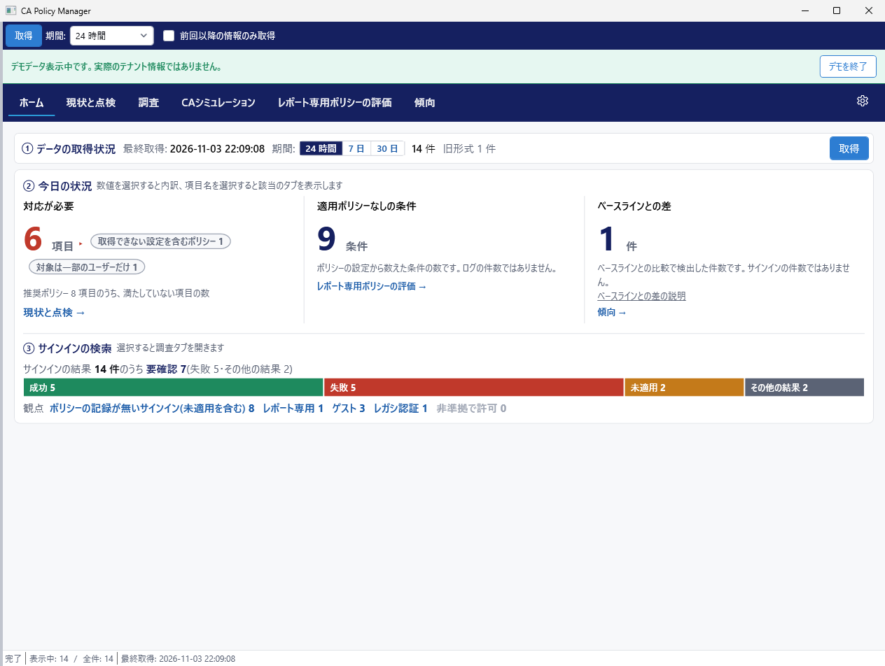
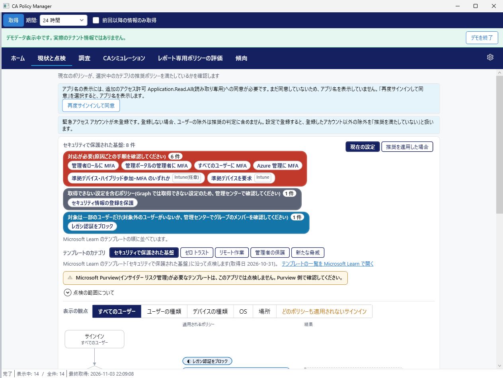

ポリシーが増えるほど、どこに適用漏れがあるのか分かりにくくなります。テナントのサインインログとポリシーを読み取って、抜けている箇所を示します。テナントの設定は変更しません。
管理者ロールに MFA を求めるポリシーを作り、部署ごとの例外を追加するうちに、ポリシーは増えていきます。ところが確認してみると、ゲストのサインインにはどのポリシーも適用されていなかった、ということがあります。こうした抜けは、ポリシーを 1 つずつ開いて読むだけでは見つけにくいものです。
CA Policy Manager は、自分の組織の Microsoft Entra テナントを管理する IT 管理者のための Windows アプリです。サインインログとポリシーの定義を Microsoft Graph から読み取り、どの条件とどのサインインにポリシーが適用されていないかを示します。
ホームには、対応が必要な項目、適用ポリシーなしの条件、ベースラインとの差の 3 つの数が並びます。適用ポリシーなしの条件には、まだ誰もサインインしていない組み合わせも含まれます。
実際に発生したサインインについては、ポリシーの記録が無いものの件数を表示します。選択すると調査のタブが開き、1 件ずつ確認できます。
Microsoft Learn のテンプレートのカテゴリごとに、今のポリシーが推奨を満たしているかを点検します。有効にしたつもりのポリシーがレポート専用のままだった、対象が一部のユーザーに限られていた、といった場合は、原因と確認する箇所を示します。
結果は流れ図で表示し、ユーザーの種類、デバイスの種類、OS、場所で観点を切り替えられます。Microsoft Graph で取得できない設定を含むポリシーなら、管理センターでの確認を案内します。
「サインインできない」という問い合わせを受けたときや、想定外のアクセスを調べるときに使います。期間、ユーザー、アプリ、結果で絞り込み、行を選択すると理由を表示します。
ポリシーで使っているグループも点検できます。メンバーがいないグループ、削除された可能性のあるグループ、緊急アクセス アカウントを除外していないポリシーは、調査の画面の「ポリシーの点検」で確認できます。
サインイン数の変化を、成功、失敗、中断、未適用、その他の結果に分けて表示します。アプリの急増、失敗の割合、時間帯の偏りはベースラインと比較し、差があれば示します。
ここからは有償版の機能です。
ユーザー、アプリ、場所、リスクなどの条件を指定すると、適用されるポリシーと結果を表示します。結果は、アクセスブロック、MFA を求められる、ポリシー未適用でアクセス可などです。実際のサインインを待たずに確認できます。
レポート専用ポリシーを有効にする前に、結果の変化を確認できます。適用ポリシーなしの条件がいくつ減るかも表示します。
レポート専用ポリシーの JSON と手順書をテキストで作成します。テナントへの適用は、管理者が管理センターで行います。
調査の結果を CSV と HTML のレポートにエクスポートできます。


ありません。CA Policy Manager は読み取り専用のアクセス許可だけを使います。有償版の変更案もテキストを作成するだけで、適用するかどうかは管理者が決めます。
この PC の、現在の Windows ユーザーのフォルダーです。発行元や第三者には送信しません。ユーザーの名前と所属、ポリシー定義、接続設定は暗号化します。サインインの記録、アプリの表示名、同意の記録は暗号化しません。詳しくはデータの保存と削除をご確認ください。
必須は AuditLog.Read.All、Policy.Read.All、User.Read.All の 3 つです。Application.Read.All と GroupMember.Read.All は任意で、アプリ名やグループのメンバーを表示するときに使います。いずれも読み取り専用の委任されたアクセス許可です。
対象外です。取得するのは対話型のサインインだけです。
一致するとは限りません。アプリの計算による推定で、Microsoft の公式の評価ではないためです。ポリシーを変更する前に、検証用の環境またはレポート専用モードで確認してください。
最終更新: 2026-11-04